In this project, I deployed and hardened a secure web server on Ubuntu 20.04 hosted on Microsoft Azure. I configured a fully functional Apache web server with domain management, SSL/TLS encryption, and firewall protections to ensure secure communication and defense against common web-based attacks.
I provisioned a virtual machine on Azure with the following specifications: - Operating System: Ubuntu 20.04 LTS - Instance: Azure Virtual Machine - Public IP: 104.41.62.218
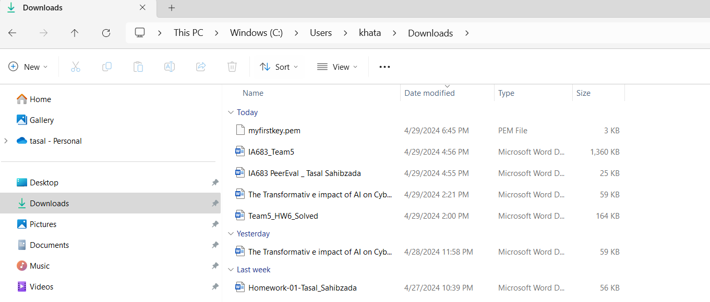
I generated an SSH key pair for secure remote access. The private key file (myfirstkey.pem) is critical for authentication—it serves as proof of identity when connecting to the Ubuntu VM via SSH. I secured this key by setting strict file permissions using chmod 400, which ensures only the owner can read the private key file.
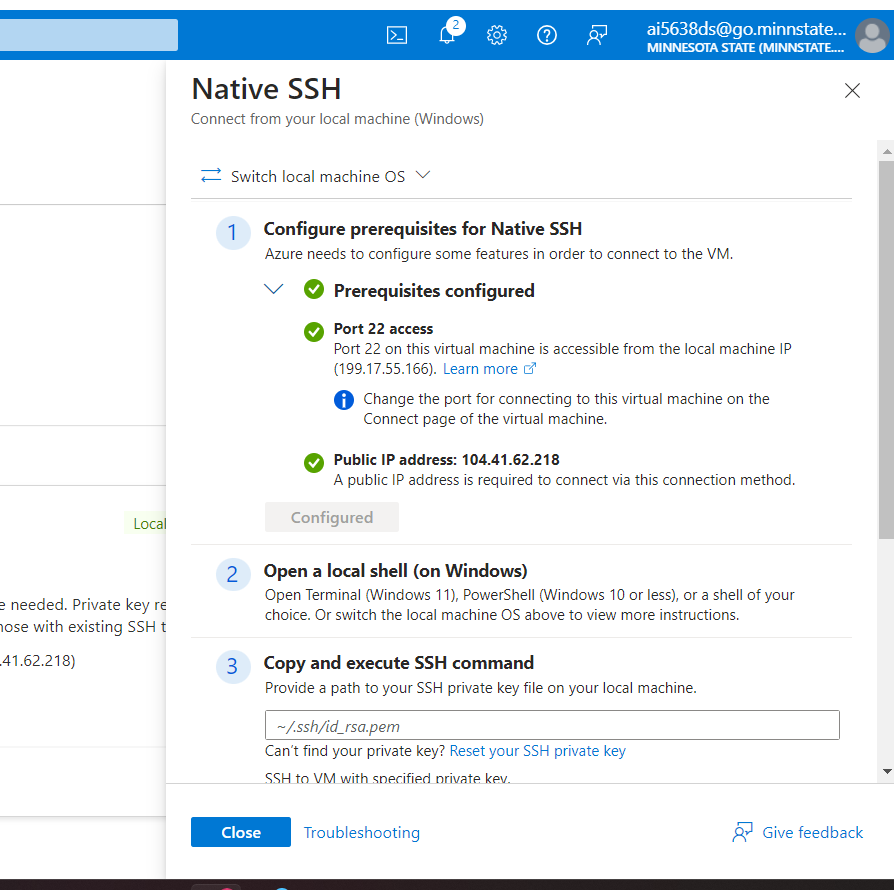
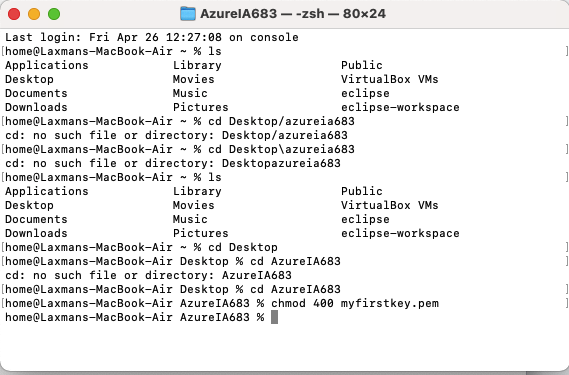
Why this matters: The private key is confidential and must never be shared. Restricting read access to only the owner minimizes the risk of unauthorized access and intrusion. SSH is designed to refuse keys with overly permissive permissions (like 600 or 700), so the 400 setting is both a security best practice and a functional requirement.
I connected to the server using:
ssh -i ~/.ssh/id_rsa.pem azureuser@104.41.62.218
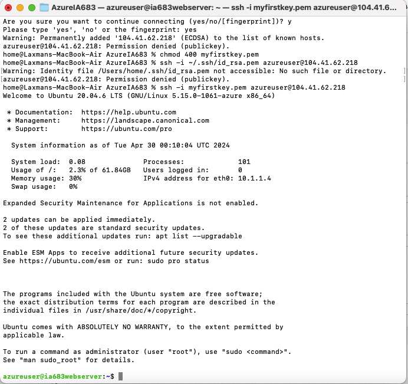
I selected and enabled three critical ports in the Azure security group:
HTTP (Port 80): Handles unencrypted web traffic for standard HTTP connections.
HTTPS (Port 443): Carries encrypted web traffic using TLS/SSL, ensuring confidentiality and integrity of data transmitted between browser and server. This is essential for protecting sensitive transactions and preventing eavesdropping.
SSH (Port 22): Provides encrypted remote access to the server, allowing secure command execution and administration.
The firewall configuration initially allows these ports to facilitate web service accessibility while maintaining security controls.
I refreshed the system package index using:
sudo apt-get update
This ensures the system has current information about available software packages, is critical for security, and allows installation of the latest patches and updates. Regular updates prevent exploitation of known vulnerabilities.
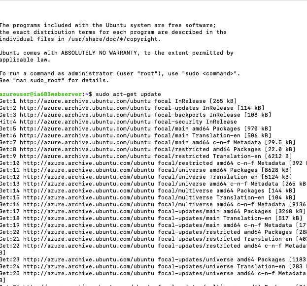
I installed Apache2, the primary web server that would host the website:
sudo systemctl install apache2
sudo systemctl start apache2
Apache is now running and ready to serve web content. I can manage it using:
sudo service apache2 restart
This command applies configuration changes, ensures service availability, and refreshes server resources.
I verified that Apache was properly serving content by visiting the server's public IP address in a browser.
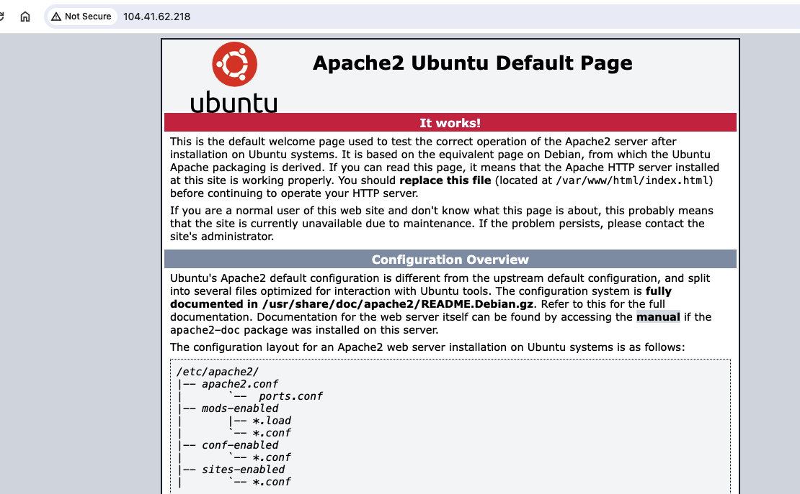
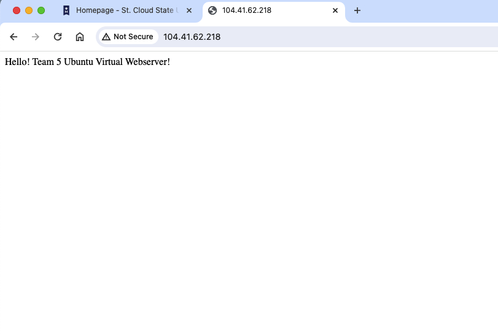
I cloned the GitHub repository containing the website code to the web server:
git clone [repository-url]
This pulls the necessary web application files to the server environment.
Screenshot showing repository cloning confirmation:
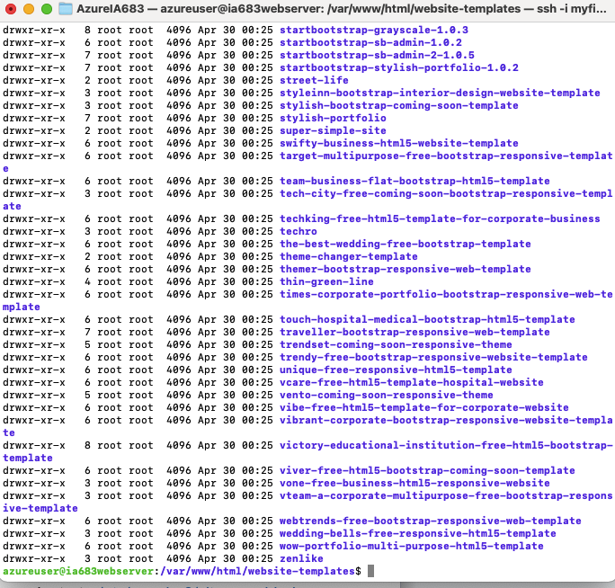
I created a new index.html file to replace Apache's default landing page. This customization ensures the website serves the intended content with integrity and authenticity.
Visual confirmation of the deployed website:
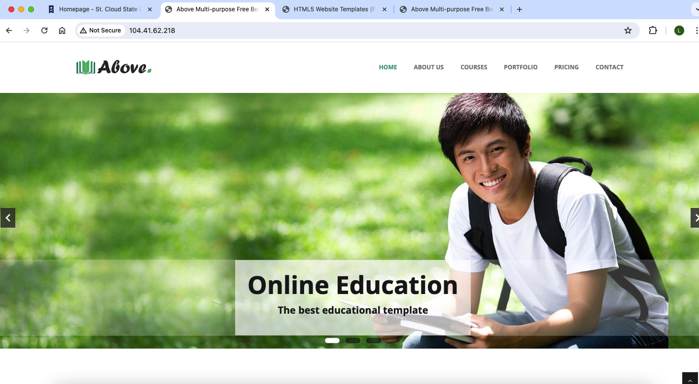
I configured Apache to recognize my custom domain. I edited the virtual host configuration to set:
ServerName laxmanpuri.space
ServerAlias www.laxmanpuri.space
Screenshot of Apache configuration file being edited:
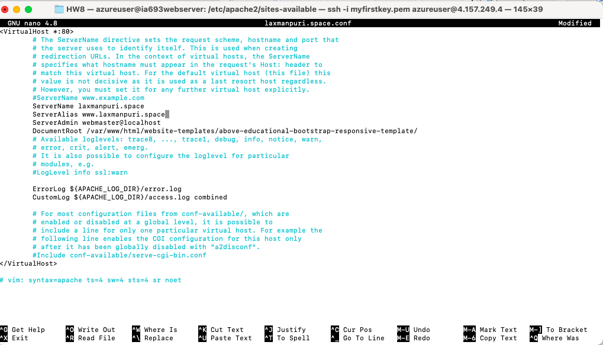
I validated the Apache configuration syntax to ensure no errors:
sudo apache2ctl configtest
Upon successful validation, I reloaded Apache to apply the changes:
sudo systemctl reload apache2
Screenshot showing successful Apache reload:
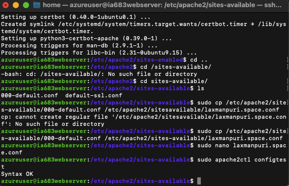
This step ensures the configuration is correctly updated, maintaining availability and integrity of the web service.
I configured Ubuntu's Uncomplicated Firewall (UFW) to control incoming traffic:
sudo ufw enable
sudo ufw allow 22/tcp # SSH
sudo ufw allow 80/tcp # HTTP
sudo ufw allow 443/tcp # HTTPS
sudo ufw default deny incoming
Screenshot of UFW configuration:
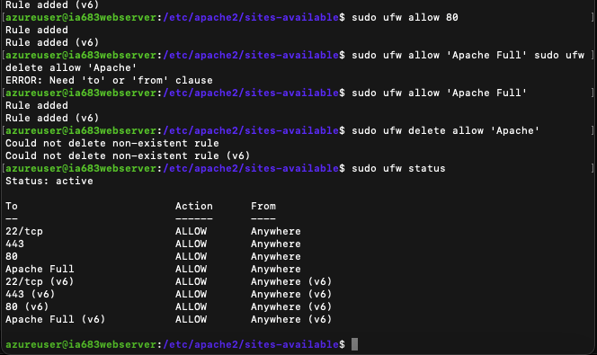
This adds a critical security layer by restricting traffic to only necessary ports. The default-deny policy means all other incoming traffic is automatically blocked, reducing the attack surface.
I implemented SSL/TLS encryption using Let's Encrypt certificates to enable HTTPS. This ensures:
Confidentiality: Data transmitted between client and server is encrypted using modern TLS protocols, preventing interception and eavesdropping.
Integrity: SSL/TLS validates the authenticity of the server certificate, preventing man-in-the-middle attacks.
Screenshot showing certificate installation and HTTPS enabled:
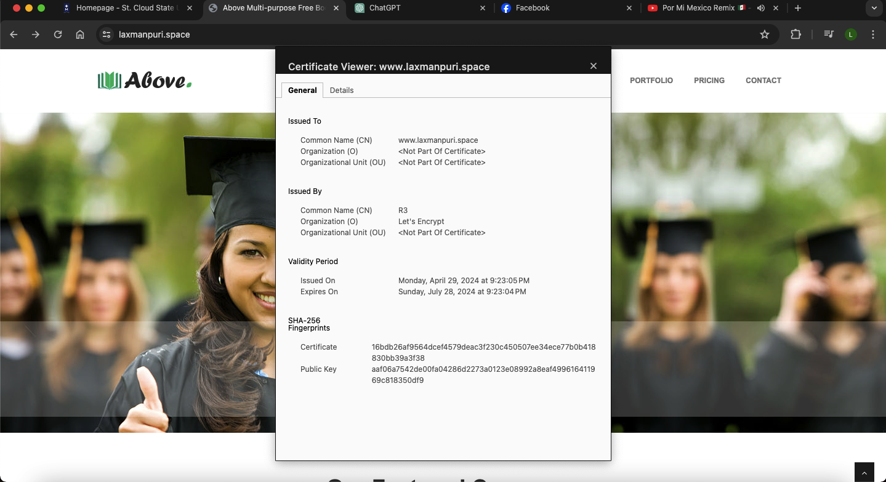
I configured the web server to: 1. Serve HTTPS on port 443 (encrypted) 2. Redirect HTTP traffic to HTTPS for automatic encryption 3. Use modern, secure protocols (TLS 1.2 or higher) and disable outdated SSLv2/SSLv3
Throughout this project, I addressed the core principles of information security:
| Security Step | Action | CIA Objective | Prevention/Detection |
|---|---|---|---|
| Port Configuration | Allowed HTTP, HTTPS, SSH while restricting others | Confidentiality, Integrity, Availability | Prevention |
| SSH Key Permissions (chmod 400) | Restricted access to private key | Confidentiality, Integrity | Prevention |
| Apache Installation | Deployed web server | Availability | Prevention |
| Custom Web Content | Replaced default pages with authenticated content | Integrity | Prevention |
| Apache Configuration | Set domain and virtual hosts | Integrity, Availability | Prevention |
| Website Verification | Tested accessibility from client machine | Availability | Detection |
| UFW Firewall | Implemented layer-2 traffic control | Confidentiality, Integrity, Availability | Prevention |
| SSL/TLS Certificate | Encrypted communication channels | Confidentiality, Integrity | Prevention |
Security is Layered: No single measure provides complete protection. I implemented multiple controls—SSH keys, firewall rules, SSL/TLS, and domain configuration—to create defense-in-depth.
Principle of Least Privilege: By restricting file permissions, firewall rules, and SSH access, I ensured that each component has only the access it needs.
Encryption is Essential: HTTPS protects data in transit, preventing eavesdropping and man-in-the-middle attacks. This should be enabled by default for all web services.
Configuration Validation Matters: Testing and validating configurations before deployment prevents service outages and security gaps.
Defense is Preventive and Detective: While I implemented preventive controls (firewall, SSL/TLS), I also verified functionality to detect any issues early.
To further harden this infrastructure, I recommend: